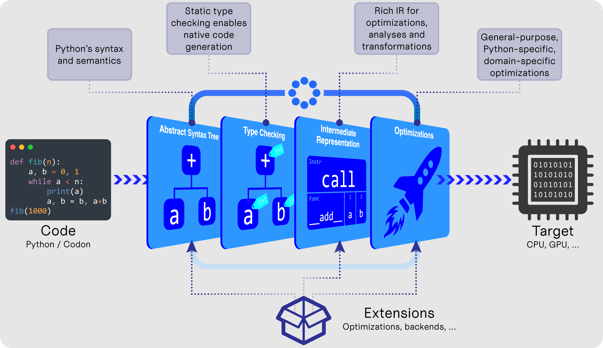

What is Codon?
Codon is a high-performance Python implementation that compiles to native machine code without any runtime overhead. Typical speedups over vanilla Python are on the order of 10-100x or more, on a single thread. Codon's performance is typically on par with (and sometimes better than) that of C/C++. Unlike Python, Codon supports native multithreading, which can lead to speedups many times higher still.
Think of Codon as Python reimagined for static, ahead-of-time compilation, built from the ground up with best possible performance in mind.
Goals
- :bulb: No learning curve: Be as close to CPython as possible in terms of syntax, semantics and libraries
- :rocket: Top-notch performance: At least on par with low-level languages like C, C++ or Rust
- :computer: Hardware support: Full, seamless support for multicore programming, multithreading (no GIL!), GPU and more
- :chart_with_upwards_trend: Optimizations: Comprehensive optimization framework that can target high-level Python constructs and libraries
- :battery: Interoperability: Full interoperability with Python's ecosystem of packages and libraries
Non-goals
-
:x: Drop-in replacement for CPython: Codon is not a drop-in replacement for CPython. There are some aspects of Python that are not suitable for static compilation — we don't support these in Codon. There are ways to use Codon in larger Python codebases via its JIT decorator or Python extension backend. Codon also supports calling any Python module via its Python interoperability. See also "Differences with Python" in the docs.
-
:x: New syntax and language constructs: We try to avoid adding new syntax, keywords or other language features as much as possible. While Codon does add some new syntax in a couple places (e.g. to express parallelism), we try to make it as familiar and intuitive as possible.
How it works

Quick start
Download and install Codon with this command:
/bin/bash -c "$(curl -fsSL https://exaloop.io/install.sh)"
After following the prompts, the codon command will be available to use. For example:
- To run a program:
codon run file.py - To run a program with optimizations enabled:
codon run -release file.py - To compile to an executable:
codon build -release file.py - To generate LLVM IR:
codon build -release -llvm file.py
Many more options are available and described in the docs.
Examples
Basics
Codon supports much of Python, and many Python programs will work with few if any modifications.
Here's a simple script fib.py that computes the 40th Fibonacci number...
from time import time
def fib(n):
return n if n < 2 else fib(n - 1) + fib(n - 2)
t0 = time()
ans = fib(40)
t1 = time()
print(f'Computed fib(40) = {ans} in {t1 - t0} seconds.')
... run through Python and Codon:
$ python3 fib.py
Computed fib(40) = 102334155 in 17.979357957839966 seconds.
$ codon run -release fib.py
Computed fib(40) = 102334155 in 0.275645 seconds.
Using Python libraries
You can import and use any Python package from Codon via from python import. For example:
from python import matplotlib.pyplot as plt
data = [x**2 for x in range(10)]
plt.plot(data)
plt.show()
(Just remember to set the CODON_PYTHON environment variable to the CPython shared library,
as explained in the the Python interoperability docs.)
Parallelism
Codon supports native multithreading via OpenMP. The @par annotation
in the code below tells the compiler to parallelize the following for-loop, in this case using
a dynamic schedule, chunk size of 100, and 16 threads.
from sys import argv
def is_prime(n):
factors = 0
for i in range(2, n):
if n % i == 0:
factors += 1
return factors == 0
limit = int(argv[1])
total = 0
@par(schedule='dynamic', chunk_size=100, num_threads=16)
for i in range(2, limit):
if is_prime(i):
total += 1
print(total)
Note that Codon automatically turns the total += 1 statement in the loop body into an atomic
reduction to avoid race conditions. Learn more in the multithreading docs.
Codon also supports writing and executing GPU kernels. Here's an example that computes the Mandelbrot set:
import gpu
MAX = 1000 # maximum Mandelbrot iterations
N = 4096 # width and height of image
pixels = [0 for _ in range(N * N)]
def scale(x, a, b):
return a + (x/N)*(b - a)
@gpu.kernel
def mandelbrot(pixels):
idx = (gpu.block.x * gpu.block.dim.x) + gpu.thread.x
i, j = divmod(idx, N)
c = complex(scale(j, -2.00, 0.47), scale(i, -1.12, 1.12))
z = 0j
iteration = 0
while abs(z) <= 2 and iteration < MAX:
z = z**2 + c
iteration += 1
pixels[idx] = int(255 * iteration/MAX)
mandelbrot(pixels, grid=(N*N)//1024, block=1024)
GPU programming can also be done using the @par syntax with @par(gpu=True). See the
GPU programming docs for more details.
NumPy support
Codon includes a feature-complete, fully-compiled native NumPy implementation. It uses the same API as NumPy, but re-implements everything in Codon itself, allowing for a range of optimizations and performance improvements.
Here's an example NumPy program that approximates pi using random numbers...
import time
import numpy as np
rng = np.random.default_rng(seed=0)
x = rng.random(500_000_000)
y = rng.random(500_000_000)
t0 = time.time()
# pi ~= 4 x (fraction of points in circle)
pi = ((x-1)**2 + (y-1)**2 < 1).sum() * (4 / len(x))
t1 = time.time()
print(f'Computed pi~={pi:.4f} in {t1 - t0:.2f} sec')
... run through Python and Codon:
$ python3 pi.py
Computed pi~=3.1417 in 2.25 sec
$ codon run -release pi.py
Computed pi~=3.1417 in 0.43 sec
Codon can speed up NumPy code through general-purpose and NumPy-specific compiler optimizations, including inlining, fusion, memory allocation elision and more. Furthermore, Codon's NumPy implementation works with its multithreading and GPU capabilities, and can even integrate with PyTorch. Learn more in the Codon-NumPy docs.
Using codon
The codon program can directly run Codon source in JIT mode:
codon run myprogram.codon
The default compilation and run mode is debug (-debug).
Compile and run with optimizations with the -release option:
codon run -release myprogram.codon
codon can also build executables:
# generate 'myprogram' executable
codon build -exe myprogram.codon
# generate 'foo' executable
codon build -o foo myprogram.codon
codon can produce object files:
# generate 'myprogram.o' object file
codon build -obj myprogram.codon
# generate 'foo.o' object file
codon build -o foo.o myprogram.codon
codon can produce LLVM IR:
# generate 'myprogram.ll' object file
codon build -llvm myprogram.codon
# generate 'foo.ll' object file
codon build -o foo.ll myprogram.codon
Compile-time definitions
codon allows for compile-time definitions via the -D flag.
For example, in the following code:
print(Int[BIT_WIDTH]())
BIT_WIDTH can be specified on the command line as such:
codon run -DBIT_WIDTH=10 myprogram.codon.
Technical
What is Codon?
Codon is a high-performance Python compiler that compiles Python code to native machine code without any runtime overhead. Typical speedups over Python are on the order of 10-100x or more, on a single thread. Codon's performance is typically on par with that of C/C++. Unlike Python, Codon supports native multithreading, which can lead to speedups many times higher still. Codon is extensible via a plugin infrastructure, which lets you incorporate new libraries, compiler optimizations and even keywords.
What isn't Codon?
While Codon supports nearly all of Python's syntax, it is not a drop-in replacement, and large codebases might require modifications to be run through the Codon compiler. For example, some of Python's modules are not yet implemented within Codon, and a few of Python's dynamic features are disallowed. The Codon compiler produces detailed error messages to help identify and resolve any incompatibilities. Codon supports seamless Python interoperability to handle cases where specific Python libraries or dynamism are required, and also supports writing Python extension modules that can be imported and used from larger Python codebases.
Why Codon?
Python is arguably the world's most popular programming language, and is gradually becoming the lingua franca particularly amongst non-technical or non-CS practitioners in numerous fields. It provides a readable, clean syntax, is easy to learn, and has an unmatched ecosystem of libraries. However, Python's achilles heel has always been performance: a typical codebase in pure Python is orders of magnitude slower than its C/C++/Rust counterpart.
Codon bridges the gap between Python's simplicity and ease-of-use, and the performance of low-level languages like C++ or Rust, by using novel compiler and type checking techniques to statically compile code ahead-of-time, avoiding all of vanilla Python's runtime overhead and performance drawbacks.
How does Codon compare to...
-
CPython? Codon tries to follow CPython's syntax, semantics and APIs as closely as possible, aside from a few cases where Codon differs from CPython for performance reasons (one example being Codon's 64-bit
intvs. CPython's arbitrary- widthint). Performance-wise, speedups over CPython are usually on the order of 10-100x. -
Numba? While Codon does offer a JIT decorator similar to Numba's, Codon is in general an ahead-of-time compiler that compiles end-to-end programs to native code. It also supports compilation of a much broader set of Python constructs and libraries.
-
PyPy? PyPy strives to effectively be a drop-in replacement for CPython, whereas Codon differs in a few places in order to eliminate any dynamic runtime or virtual machine, and thereby attain much better performance.
-
Cython? Like Cython, Codon has a Python-extension build mode that compiles to Python extension modules, allowing Codon-compiled code to be imported and called from plain Python.
-
C++? Codon often generates the same code as an equivalent C or C++ program. Codon can sometimes generate better code than C/C++ compilers for a variety of reasons, such as better container implementations, the fact that Codon does not use object files and inlines all library code, or Codon-specific compiler optimizations that are not performed with C or C++.
-
Julia? Codon's compilation process is actually much closer to C++ than to Julia. Julia is a dynamically-typed language that performs type inference as an optimization, whereas Codon type checks the entire program ahead of time. Codon also tries to circumvent the learning curve of a new language by adopting Python's syntax and semantics.
-
Mojo? Mojo strives to add low-level programming support/features to the Python language, while also supporting the rest of Python by relying on CPython. By contrast, Codon aims to make Python itself more performant by using new type checking and compilation techniques, without trying to be a superset or drop-in replacement. Codon tries to minimize new syntax and language features with respect to Python.
You can see results from Codon's benchmark suite suite at exaloop.io/#benchmarks. More benchmarks can be found in the 2019 paper on bioinformatics-specific use cases (note that the name used in that paper is that of Codon's predecessor, "Seq").
I want to use Codon, but I have a large Python codebase I don't want to port.
You can use Codon on a per-function basis via the @codon.jit decorator,
which can be used within Python codebases. This will compile only the annotated functions
and automatically handle data conversions to and from Codon. It also allows for
the use of any Codon-specific modules or extensions, such as multithreading.
Codon can also compile to Python extension modules that can be imported and used from Python.
What about interoperability with other languages and frameworks?
Interoperability is and will continue to be a priority for Codon. We don't want using Codon to render you unable to use all the other great frameworks and libraries that exist. Codon supports full interoperability with Python and C/C++.
Does Codon use garbage collection?
Yes, Codon uses the Boehm garbage collector.
Codon doesn't support Python module X or function Y.
While Codon covers a sizeable subset of Python's standard library, it does not yet cover
every function from every module. Note that missing functions can still be called through
Python via from python import. Many of the functions that lack Codon-native implementations
(e.g. I/O or OS related functions) will generally also not see substantial speedups from Codon.
Codon is no faster than Python for my application.
Applications that spend most of their time in C-implemented library code generally do not see substantial performance improvements in Codon. Similarly, applications that are I/O or network-bound will have the same bottlenecks in Codon.
Codon is slower than Python for my application.
Please report any cases where Codon is noticeably slower than Python as bugs on our issue tracker.
Usage
Is Codon free and open source?
Yes, Codon is free and open source under the Apache License, Version 2.0. Exaloop offers enterprise and custom solutions on top of Codon for a variety of applications, use cases and industries; please email info@exaloop.io to learn more.
Contributing
Does Codon accept outside contributions?
Absolutely, we'd be delighted to accept any contributions in the form of issues, bug reports, feature requests or pull requests.
I want to contribute. Where do I start?
If you have a specific feature or use case in mind, here is a quick breakdown of the codebase to help provide a sense of where to look first:
codon/: compiler codecodon/parser/: parser and type checker code: this is the first step of compilationcodon/cir/: Codon IR and optimizations: the second step of compilationcodon/cir/llvm/: conversion from Codon IR to LLVM IR and machine code: the last step of compilationcodon/runtime/: runtime library: used during execution
stdlib/: standard library code
You can also take a look at some of the open issues. If you have any question or suggestions, please feel free to ask in the forum.
Is there a Contributor License Agreement (CLA)?
Yes, there is a CLA that is required to be agreed to before any pull requests are merged. Please see exaloop.io/legal/cla for more information. To agree to the CLA, send an email with your GitHub username to info@exaloop.io.
While Codon's syntax and semantics are nearly identical to Python's, there are some notable differences that are worth mentioning. Most of these design decisions were made with the trade-off between performance and Python compatibility in mind.
Please see our roadmap for more information about how we plan to close some of these gaps in the future.
Data types
-
Integers: Codon's
intis a 64-bit signed integer, whereas Python's (after version 3) can be arbitrarily large. However Codon does support larger integers viaInt[N]whereNis the bit width. -
Strings: Codon currently uses ASCII strings unlike Python's unicode strings.
-
Dictionaries: Codon's dictionary type does not preserve insertion order, unlike Python's as of 3.6.
-
Tuples: Since tuples compile down to structs, tuple lengths must be known at compile time, meaning you can't convert an arbitrarily-sized list to a tuple, for instance.
Type checking
Since Codon performs static type checking ahead of time, a few of Python's dynamic features are disallowed. For example, monkey patching classes at runtime (although Codon supports a form of this at compile time) or adding objects of different types to a collection.
These few restrictions are ultimately what allow Codon to compile to native code without any runtime performance overhead. Future versions of Codon will lift some of these restrictions by the introduction of e.g. implicit union types.
Numerics
For performance reasons, some numeric operations use C semantics
rather than Python semantics. This includes, for example, raising
an exception when dividing by zero, or other checks done by math
functions. Strict adherence to Python semantics can be achieved by
using the -numerics=py flag of the Codon compiler. Note that this
does not change ints from 64-bit.
Modules
While most of the commonly used builtin modules have Codon-native
implementations, a few are not yet implemented. However these can
still be used within Codon via from python import.
Below you can find release notes for each major Codon release, listing improvements, updates, optimizations and more for each new version.
These release notes generally do not include small bug fixes. See the closed issues for more information.
v0.18
License change
- Codon is now truly open source under the Apache license.
- Exaloop continues to offer enterprise licenses with added support, services and custom solutions for organizations that want and need them. Contact info@exaloop.io to learn more.
New Codon-native NumPy implementation
- New NumPy implementation for Codon, written in Codon itself.
- Interoperable with Codon's multithreading and GPU backends.
- NumPy-specific compiler optimizations (e.g. operator fusion optimizations) added to Codon's standard optimization suite.
- Learn more in the Codon-NumPy docs.
New compiler options
-fast-mathwill enable fast-math optimizations. Use this flag with caution as it changes floating-point semantics.
v0.17
LLVM upgrade
Upgraded to LLVM 17 (from 15).
Standard library updates
- New floating-point types
float16,bfloat16andfloat128. - Updates to several existing functions, such as adding
keyanddefaultarguments tomin()andmax(). - Slice arguments can now be of any type, not just
int. - Added
input()function.
Other improvements
- Property setters are now supported.
- Updated import logic to match CPython's more closely.
- Several improvements to dynamic polymorphism to match CPython more closely.
New compiler options
-disable-exceptionswill disable exceptions, potentially eliding various runtime checks (e.g. bounds checks for lists). This flag should only be used if you know that no exceptions will be raised in the given program.
v0.16
Python extensions
A new build mode is added to codon called pyext which compiles
to Python extension modules, allowing Codon code to be imported and
called directly from Python (similar to Cython). Please see the
docs for more information and usage examples.
Standard library updates
-
Various additions to the standard library, such as
math.fsum()and the built-inpow(). -
Added
complex64, which is a complex number with 32-bit float real and imaginary components. -
Better
Int[N]andUInt[N]support: can now convert ints wider than 64-bit to string; now supports more operators.
More Python-specific optimizations
New optimizations for specific patterns including any()/all() and
multiple list concatenations. These patterns are now recognized and
optimized in Codon's IR.
Static expressions
Codon now supports more compile-time static functions, such as staticenumerate.
v0.15
Union types
Codon adds support for union types (e.g., Union[int, float]):
def foo(cmd) -> Union:
if cmd == 'int': return 1
else: return "s"
foo('int') # type is Union[int,str]
5 + foo('int') # 6
'a' + foo('str') # as
Dynamic inheritance
Dynamic inheritance and polymorphism are now supported:
class A:
def __repr__(): return 'A'
class B(A):
def __repr__(): return 'B'
l = [A(), B(), A()] # type of l is List[A]
print(l) # [A, B, A]
This feature is still a work in progress.
LLVM upgrade
Upgraded to LLVM 15 (from 12). Note that LLVM 15 now uses
opaque pointers,
e.g. ptr instead of i8* or i64*, which affects @llvm
functions written in Codon as well as LLVM IR output of
codon build.
Standard library
random module now matches Python exactly for the same seed.
v0.14
GPU support
GPU kernels can now be written and called in Codon. Existing
loops can be parallelized on the GPU with the @par(gpu=True)
annotation. Please see the docs for
more information and examples.
Semantics
Added -numerics flag, which specifies semantics of various
numeric operations:
-numerics=c(default): C semantics; best performance-numerics=py: Python semantics (checks for zero divisors and raisesZeroDivisionError, and adds domain checks tomathfunctions); might slightly decrease performance.
Types
Added float32 type to represent 32-bit floats (equivalent to C's
float). All math functions now have float32 overloads.
Parallelism
Added collapse option to @par:
@par(collapse=2) # parallelize entire iteration space of 2 loops
for i in range(N):
for j in range(N):
do_work(i, j)
Standard library
Added collections.defaultdict.
Python interoperability
Various Python interoperability improvements: can now use isinstance
on Python objects/types and can now catch Python exceptions by name.
v0.13
Language
Scoping
Scoping was changed to match Python scoping. For example:
if condition:
x = 42
print(x)
If condition is False, referencing x causes a NameError
to be raised at runtime, much like what happens in Python.
There is zero new performance overhead for code using the old
scoping; code using the new scoping as above generates a flag to
indicate whether the given variable has been assigned.
Moreover, variables can now be assigned to different types:
x = 42
print(x) # 42
x = 'hello'
print(x) # hello
The same applies in Jupyter or JIT environments.
Static methods
Added support for @staticmethod method decorator.
Class variables are also supported:
class Cls:
a = 5 # or "a: ClassVar[int] = 5" (PEP 526)
@staticmethod
def method():
print('hello world')
c = Cls()
Cls.a, Cls.method(), c.a, c.method() # supported
Tuple handling
Arbitrary classes can now be converted to tuples via the tuple()
function.
Void type
The void type has been completely removed in favor of the new
and Pythonic NoneType, which compiles to an empty LLVM struct.
This does not affect C interoperability as the empty struct type
is replaced by void by LLVM.
Standard library
The re module is now fully supported, and uses
Google's re2 as a backend. Future
versions of Codon will also include an additional regex optimization
pass to compile constant ("known at compile time") regular expressions
to native code.
C variables
Global variables with C linkage can now be imported via from C import:
# assumes the C variable "long foo"
from C import foo: int
print(foo)
Parallelism
Numerous improvements to the OpenMP backend, including the addition of task-based reductions:
total = 0
@par
for a in some_arbitrary_generator():
total += do_work(a) # now converted to task reduction
Python interoperability
Included revamped codon module for Python, with @codon.jit decorator
for compiling Python code in existing codebases. Further improved and
optimized the Python bridge. Please see the docs
for more information.
Codon IR
New capture analysis pass for Codon IR for improving tasks such as dead code elimination and side effect analysis. This allows Codon IR to deduce whether arbitrary, compilable Python expressions have side effects, capture variables, and more.
Code generation and optimizations
A new dynamic allocation optimization pass is included, which 1)
removes unused allocations (e.g. instantiating a class but never
using it) and 2) demotes small heap allocations to stack (alloca)
allocations when possible. The latter optimization can frequently
remove any overhead associated with instantiating most classes.
Command-line tool
The codon binary can now compile to shared libraries using the -lib
option to codon build (or it can be deduced from a .so or .dylib
extension on the output file name).
Errors
Added support for multiple error reporting.
Codon's goal is to be as close to CPython as possible while still being fully statically compilable. While Codon already supports much of Python, there is still much to be done to fully realize its potential. Here is a high-level roadmap of the things we want to add, implement or explore.
Core features
-
Type system improvements:
- First-class types and compile-time metaclasses
- Full class member deduction
- Implicit union types to support mixed-type collections
- Variadic type arguments (e.g.
Foo[Bar, ...])
-
Parallelism
async/awaitsupportmultiprocessingsupport- Automatic locking in parallel code (e.g. if mutating a data structure shared between threads)
- Race detection
-
Compatibility with Python 3.10+:
- Argument separators (
/and*) - Constructor object matching in the
matchstatement - Support accessing various object properties (
__dict__,__slots__etc.) as much as possible in a static context
- Argument separators (
-
Optional automatic switching between Codon and CPython (i.e. compile only compatible functions and leave the rest to Python)
-
Better error messages
- Warning support
- Explain performance considerations
- Explain that a CPython feature is not supported
-
Modules and incremental compilation
- Cache compilation modules
- Fast generics compilation in debug mode for quick turnarounds
-
Memory management
- Auto-tune GC
- Optional alternative memory management modes like reference counting
-
GPU support
- Target Apple, AMD and Intel GPUs
- GPU-specific compiler optimizations (e.g. for using various Python constructs on the GPU)
-
Interoperability with other languages
- Direct C++ interoperability via Clang
- R interoperability
Libraries
Currently, missing Python functionality can be easily accessed via a
from python import foo statement, which is sufficient in most cases
as many libraries are just thin wrappers around a C library and/or not
performance-sensitive.
However, in the near future, we would like to support the following modules natively:
-
Python's standard library
- Complete builtins support
- 1-to-1 compatibility with existing Python functions and modules
- File modules:
os,sys,struct,pathliband so on - Pretty much everything else on an as-needed basis
-
Native NumPy, Pandas, etc.: Having Codon-native versions of the most popular 3rd-party libraries would allow them to work with Codon's other features like multithreading and GPU. We're currently prioritizing NumPy and Pandas but aim to later target other popular libraries as well.
- As of Codon 0.18, NumPy is natively supported!
-
Unicode support
-
Python's testing infrastructure
Infrastructure & Tools
-
Windows support
-
A sane package manager similar to Rust's Cargo
-
Auto-detection of installed Python libraries
-
Improved
codon.jitlibrary support- Better error messages
- Better installation flow
-
Fully static binary support like Go
- Remove
libcodonrt(runtime library) dependency if needed - Remove
libcppdependency
- Remove
-
Improved Jupyter support
- Auto-completion and code inspection
- Jupyter magic command support
-
Plugins for Visual Studio Code, Vim, Emacs and so on
Documentation
- Fully document major differences with CPython
- Document Codon IR API, with guides and tutorials
- Document all supported modules
Nice to have
- Implement Codon in Codon
If you know Python, you already know 99% of Codon. This section covers the Codon language as well as some of the key differences and additional features on top of Python.
Printing
print('hello world')
from sys import stderr
print('hello world', end='', file=stderr)
Comments
# Codon comments start with "# 'and go until the end of the line
"""
Multi-line comments are
possible like this.
"""
Literals
# Booleans
True # type: bool
False
# Numbers
a = 1 # type: int; a signed 64-bit integer
b = 1.12 # type: float; a 64-bit float (just like "double" in C)
c = 5u # unsigned int; an unsigned 64-bit int
d = Int[8](12) # 8-bit signed integer; you can go all the way to Int[2048]
e = UInt[8](200) # 8-bit unsigned integer
f = byte(3) # Codon's byte is equivalent to C's char; equivalent to Int[8]
h = 0x12AF # hexadecimal integers are also welcome
g = 3.11e+9 # scientific notation is also supported
g = .223 # and this is also float
g = .11E-1 # and this as well
# Strings
s = 'hello! "^_^" ' # type: str
t = "hello there! \t \\ '^_^' " # \t is a tab character; \\ stands for \
raw = r"hello\n" # raw strings do not escape slashes; this would print "hello\n"
fstr = f"a is {a + 1}" # an f-string; prints "a is 2"
fstr = f"hi! {a+1=}" # an f-string; prints "hi! a+1=2"
t = """
hello!
multiline string
"""
# The following escape sequences are supported:
# \\, \', \", \a, \b, \f, \n, \r, \t, \v,
# \xHHH (HHH is hex code), \OOO (OOO is octal code)
Assignments and operators
a = 1 + 2 # this is 3
a = (1).__add__(2) # you can use a function call instead of an operator; this is also 3
a = int.__add__(1, 2) # this is equivalent to the previous line
b = 5 / 2.0 # this is 2.5
c = 5 // 2 # this is 2; // is an integer division
a *= 2 # a is now 6
Here is the list of binary operators and each one's associated magic method:
| Operator | Magic method | Description |
|---|---|---|
+ | __add__ | addition |
- | __sub__ | subtraction |
* | __mul__ | multiplication |
/ | __truediv__ | float (true) division |
// | __floordiv__ | integer (floor) division |
** | __pow__ | exponentiation |
% | __mod__ | modulo |
@ | __matmul__ | matrix multiplication |
& | __and__ | bitwise and |
| | __or__ | bitwise or |
^ | __xor__ | bitwise xor |
<< | __lshift__ | left bit shift |
>> | __rshift__ | right bit shift |
< | __lt__ | less than |
<= | __le__ | less than or equal to |
> | __gt__ | greater than |
>= | __ge__ | greater than or equal to |
== | __eq__ | equal to |
!= | __ne__ | not equal to |
in | __contains__ | belongs to |
and | none | boolean and (short-circuits) |
or | none | boolean or (short-circuits) |
Codon also has the following unary operators:
| Operator | Magic method | Description |
|---|---|---|
~ | __invert__ | bitwise not |
+ | __pos__ | unary positive |
- | __neg__ | unary negation |
not | none | boolean negation |
Control flow
Conditionals
Codon supports the standard Python conditional syntax:
if a or b or some_cond():
print(1)
elif whatever() or 1 < a <= b < c < 4: # chained comparisons are supported
print('meh...')
else:
print('lo and behold!')
a = b if sth() else c # ternary conditional operator
Codon extends the Python conditional syntax with a match statement,
which is inspired by Rust's:
match a + some_heavy_expr(): # assuming that the type of this expression is int
case 1: # is it 1?
print('hi')
case 2 ... 10: # is it 2, 3, 4, 5, 6, 7, 8, 9 or 10?
print('wow!')
case _: # "default" case
print('meh...')
match bool_expr(): # now it's a bool expression
case True:
print('yay')
case False:
print('nay')
match str_expr(): # now it's a str expression
case 'abc': print("it's ABC time!")
case 'def' | 'ghi': # you can chain multiple rules with the "|" operator
print("it's not ABC time!")
case s if len(s) > 10: print("so looong!") # conditional match expression
case _: assert False
match some_tuple: # assuming type of some_tuple is Tuple[int, int]
case (1, 2): ...
case (a, _) if a == 42: # you can do away with useless terms with an underscore
print('hitchhiker!')
case (a, 50 ... 100) | (10 ... 20, b): # you can nest match expressions
print('complex!')
match list_foo():
case []: # [] matches an empty list
print('A')
case [1, 2, 3]: # make sure that list_foo() returns List[int] though!
print('B')
case [1, 2, ..., 5]: # matches any list that starts with 1 and 2 and ends with 5
print('C')
case [..., 6] | [6, ...]: # matches a list that starts or ends with 6
print('D')
case [..., w] if w < 0: # matches a list that ends with a negative integer
print('E')
case [...]: # any other list
print('F')
You can mix, match and chain match rules as long as the match type matches the expression type.
Loops
Standard fare:
a = 10
while a > 0: # prints even numbers from 9 to 1
a -= 1
if a % 2 == 1:
continue
print(a)
for i in range(10): # prints numbers from 0 to 7, inclusive
print(i)
if i > 6:
break
for construct can iterate over any generator, which means any object
that implements the __iter__ magic method. In practice, generators,
lists, sets, dictionaries, homogenous tuples, ranges, and many more
types implement this method. If you need to implement one yourself,
just keep in mind that __iter__ is a generator and not a function.
Imports
You can import functions and classes from another Codon module by doing:
# Create foo.codon with a bunch of useful methods
import foo
foo.useful1()
p = foo.FooType()
# Create bar.codon with a bunch of useful methods
from bar import x, y
x(y)
from bar import z as bar_z
bar_z()
import foo looks for foo.codon or foo/__init__.codon in the
current directory.
Exceptions
Again, if you know how to do this in Python, you know how to do it in Codon:
def throwable():
raise ValueError("doom and gloom")
try:
throwable()
except ValueError as e:
print("we caught the exception")
except:
print("ouch, we're in deep trouble")
finally:
print("whatever, it's done")
If you have an object that implements __enter__ and __exit__ methods
to manage its lifetime (say, a File), you can use a with statement
to make your life easier:
with open('foo.txt') as f, open('foo_copy.txt', 'w') as fo:
for l in f:
fo.write(l)
Collections are largely the same as in Python:
l = [1, 2, 3] # type: List[int]; a list of integers
s = {1.1, 3.3, 2.2, 3.3} # type: Set[float]; a set of floats
d = {1: 'hi', 2: 'ola', 3: 'zdravo'} # type: Dict[int, str]; a dictionary of int to str
ln = [] # an empty list whose type is inferred based on usage
ln = List[int]() # an empty list with explicit element type
dn = {} # an empty dict whose type is inferred based on usage
dn = Dict[int, float]() # an empty dictionary with explicit element types
sn = set() # an empty set whose type is inferred based on usage
sn = Set[str]() # an empty set with explicit element type
Lists also take an optional capacity constructor argument, which can be useful
when creating large lists:
squares = list(capacity=1_000_000) # list with room for 1M elements
# Fill the list
for i in range(1_000_000):
squares.append(i ** 2)
Comprehensions
Comprehensions are a nifty, Pythonic way to create collections, and are fully supported by Codon:
l = [i for i in range(5)] # type: List[int]; l is [0, 1, 2, 3, 4]
l = [i for i in range(15) if i % 2 == 1 if i > 10] # type: List[int]; l is [11, 13]
l = [i * j for i in range(5) for j in range(5) if i == j] # l is [0, 1, 4, 9, 16]
s = {abs(i - j) for i in range(5) for j in range(5)} # s is {0, 1, 2, 3, 4}
d = {i: f'item {i+1}' for i in range(3)} # d is {0: "item 1", 1: "item 2", 2: "item 3"}
You can also use generators to create collections:
g = (i for i in range(10))
print(list(g)) # prints list of integers from 0 to 9, inclusive
Tuples
t = (1, 2.3, 'hi') # type: Tuple[int, float, str]
t[1] # type: float
u = (1, ) # type: Tuple[int]
As all types must be known at compile time, tuple indexing works only if a tuple is homogenous (all types are the same) or if the value of the index is known at compile time.
You can, however, iterate over heterogenous tuples in Codon. This is achieved behind the scenes by unrolling the loop to accommodate the different types.
t = (1, 2.3, 'hi')
t[1] # works because 1 is a constant int
x = int(argv[1])
t[x] # compile error: x is not known at compile time
# This is a homogenous tuple (all member types are the same)
u = (1, 2, 3) # type: Tuple[int, int, int]
u[x] # works because tuple members share the same type regardless of x
for i in u: # works
print(i)
# Also works
v = (42, 'x', 3.14)
for i in v:
print(i)
Codon supports most of Python's tuple unpacking syntax:
x, y = 1, 2 # x is 1, y is 2
(x, (y, z)) = 1, (2, 3) # x is 1, y is 2, z is 3
[x, (y, z)] = (1, [2, 3]) # x is 1, y is 2, z is 3
l = range(1, 8) # l is [1, 2, 3, 4, 5, 6, 7]
a, b, *mid, c = l # a is 1, b is 2, mid is [3, 4, 5, 6], c is 7
a, *end = l # a is 1, end is [2, 3, 4, 5, 6, 7]
*beg, c = l # c is 7, beg is [1, 2, 3, 4, 5, 6]
(*x, ) = range(3) # x is [0, 1, 2]
*x = range(3) # error: this does not work
*sth, a, b = (1, 2, 3, 4) # sth is (1, 2), a is 3, b is 4
*sth, a, b = (1.1, 2, 3.3, 4) # error: this only works on homogenous tuples for now
(x, y), *pff, z = [1, 2], 'this'
print(x, y, pff, z) # x is 1, y is 2, pff is an empty tuple --- () ---, and z is "this"
s, *q = 'XYZ' # works on strings as well; s is "X" and q is "YZ"
Strong typing
Because Codon is strongly typed, these won't compile:
l = [1, 's'] # is it a List[int] or List[str]? you cannot mix-and-match types
d = {1: 'hi'}
d[2] = 3 # d is a Dict[int, str]; the assigned value must be a str
t = (1, 2.2) # Tuple[int, float]
lt = list(t) # compile error: t is not homogenous
lp = [1, 2.1, 3, 5] # compile error: Codon will not automatically cast a float to an int
This will work, though:
u = (1, 2, 3)
lu = list(u) # works: u is homogenous
Functions are defined as follows:
def foo(a, b, c):
return a + b + c
print(foo(1, 2, 3)) # prints 6
Functions don't have to return a value:
def proc(a, b):
print(a, 'followed by', b)
proc(1, 's')
def proc2(a, b):
if a == 5:
return
print(a, 'followed by', b)
proc2(1, 's')
proc2(5, 's') # this prints nothing
Codon is a strongly-typed language, so you can restrict argument and return types:
def fn(a: int, b: float):
return a + b # this works because int implements __add__(float)
fn(1, 2.2) # 3.2
fn(1.1, 2) # error: 1.1. is not an int
def fn2(a: int, b):
return a - b
fn2(1, 2) # -1
fn2(1, 1.1) # -0.1; works because int implements __sub__(float)
fn2(1, 's') # error: there is no int.__sub__(str)!
def fn3(a, b) -> int:
return a + b
fn3(1, 2) # works, since 1 + 2 is an int
fn3('s', 'u') # error: 's'+'u' returns 'su' which is str
# but the signature indicates that it must return int
Default and named arguments are also supported:
def foo(a, b: int, c: float = 1.0, d: str = 'hi'):
print(a, b, c, d)
foo(1, 2) # prints "1 2 1 hi"
foo(1, d='foo', b=1) # prints "1 1 1 foo"
As are optional arguments:
# type of b promoted to Optional[int]
def foo(a, b: int = None):
print(a, b + 1)
foo(1, 2) # prints "1 3"
foo(1) # raises ValueError, since b is None
Generics
Codon emulates Python's lax runtime type checking using a technique known as monomorphization. If a function has an argument without a type definition, Codon will treat it as a generic function, and will generate different instantiations for each different invocation:
def foo(x):
print(x) # print relies on typeof(x).__repr__(x) method to print the representation of x
foo(1) # Codon automatically generates foo(x: int) and calls int.__repr__ when needed
foo('s') # Codon automatically generates foo(x: str) and calls str.__repr__ when needed
foo([1, 2]) # Codon automatically generates foo(x: List[int]) and calls List[int].__repr__ when needed
But what if you need to mix type definitions and generic types? Say, your function can take a list of anything? You can use generic type parameters:
def foo(x: List[T], T: type):
print(x)
foo([1, 2]) # prints [1, 2]
foo(['s', 'u']) # prints [s, u]
foo(5) # error: 5 is not a list!
foo(['s', 'u'], int) # fails: T is int, so foo expects List[int] but it got List[str]
def foo(x, R: type) -> R:
print(x)
return 1
foo(4, int) # prints 4, returns 1
foo(4, str) # error: return type is str, but foo returns int!
Generic type parameters are an optional way to enforce various typing constraints.
Codon supports classes just like Python. However, you must declare class members and their types in the preamble of each class (like you would do with Python's dataclasses):
class Foo:
x: int
y: int
def __init__(self, x: int, y: int): # constructor
self.x, self.y = x, y
def method(self):
print(self.x, self.y)
f = Foo(1, 2)
f.method() # prints "1 2"
Unlike Python, Codon supports method overloading:
class Foo:
x: int
y: int
def __init__(self): # constructor
self.x, self.y = 0, 0
def __init__(self, x: int, y: int): # another constructor
self.x, self.y = x, y
def __init__(self, x: int, y: float): # yet another constructor
self.x, self.y = x, int(y)
def method(self: Foo):
print(self.x, self.y)
Foo().method() # prints "0 0"
Foo(1, 2).method() # prints "1 2"
Foo(1, 2.3).method() # prints "1 2"
Foo(1.1, 2.3).method() # error: there is no Foo.__init__(float, float)
Classes can also be generic:
class Container[T]:
elements: List[T]
def __init__(self, elements: List[T]):
self.elements = elements
Classes create objects that are passed by reference:
class Point:
x: int
y: int
p = Point(1, 2)
q = p # this is a reference!
p.x = 2
print((p.x, p.y), (q.x, q.y)) # (2, 2), (2, 2)
If you need to copy an object's contents, implement the __copy__
magic method and use q = copy(p) instead.
Classes can inherit from other classes:
class NamedPoint(Point):
name: str
def __init__(self, x: int, y: int, name: str):
super().__init__(x, y)
self.name = name
Named tuples
Codon also supports pass-by-value types via the @tuple annotation, which are
effectively named tuples (equivalent to Python's collections.namedtuple):
@tuple
class Point:
x: int
y: int
p = Point(1, 2)
q = p # this is a copy!
print((p.x, p.y), (q.x, q.y)) # (1, 2), (1, 2)
However, named tuples are immutable. The following code will not compile:
p = Point(1, 2)
p.x = 2 # error: immutable type
You can also add methods to named tuples:
@tuple
class Point:
x: int
y: int
def __new__(): # named tuples are constructed via __new__, not __init__
return Point(0, 1)
def some_method(self):
return self.x + self.y
p = Point() # p is (0, 1)
print(p.some_method()) # 1
Type extensions
Suppose you have a class that lacks a method or an operator that might
be really useful. Codon provides an @extend annotation that allows
programmers to add and modify methods of various types at compile time,
including built-in types like int or str. This actually allows much
of the functionality of built-in types to be implemented in Codon as type
extensions in the standard library.
class Foo:
...
f = Foo(...)
# We need foo.cool() but it does not exist... not a problem for Codon
@extend
class Foo:
def cool(self: Foo):
...
f.cool() # works!
# Let's add support for adding integers and strings:
@extend
class int:
def __add__(self: int, other: str):
return self + int(other)
print(5 + '4') # 9
Note that all type extensions are performed strictly at compile time and incur no runtime overhead.
Magic methods
Here is a list of useful magic methods that you might want to add and overload:
| Magic method | Description |
|---|---|
__copy__ | copy-constructor for copy method |
__len__ | for len method |
__bool__ | for bool method and condition checking |
__getitem__ | overload obj[key] |
__setitem__ | overload obj[key] = value |
__delitem__ | overload del obj[key] |
__iter__ | support iterating over the object |
__repr__ | support printing and str conversion |
Codon supports generators, and in fact they are heavily optimized in the compiler so as to typically eliminate any overhead:
def gen(n):
i = 0
while i < n:
yield i ** 2
i += 1
print(list(gen(10))) # prints [0, 1, 4, ..., 81]
print(list(gen(0))) # prints []
You can also use yield to implement coroutines: yield suspends the
function, while (yield) (i.e. with parenthesis) receives a value, as
in Python.
def mysum(start):
m = start
while True:
a = (yield) # receives the input of coroutine.send() call
if a == -1:
break # exits the coroutine
m += a
yield m
iadder = mysum(0) # assign a coroutine
next(iadder) # activate it
for i in range(10):
iadder.send(i) # send a value to coroutine
print(iadder.send(-1)) # prints 45
Generator expressions are also supported:
squares = (i ** 2 for i in range(10))
for i,s in enumerate(squares):
print(i, 'x', i, '=', s)
Sometimes, certain values or conditions need to be known
at compile time. For example, the bit width N of an
integer type Int[N], or the size M of a static array
__array__[int](M) need to be compile time constants.
To accomodate this, Codon uses static values, i.e.
values that are known and can be operated on at compile
time. Static[T] represents a static value of type T.
Currently, T can only be int or str.
For example, we can parameterize the bit width of an integer type as follows:
N: Static[int] = 32
a = Int[N](10) # 32-bit integer 10
b = Int[2 * N](20) # 64-bit integer 20
All of the standard arithmetic operations can be applied to static integers to produce new static integers.
Statics can also be passed to the codon compiler via the
-D flag, as in -DN=32.
Classes can also be parameterized by statics:
class MyInt[N: Static[int]]:
n: Int[N]
x = MyInt[16](i16(42))
Static evaluation
In certain cases a program might need to check a particular type and perform different actions based on it. For example:
def flatten(x):
if isinstance(x, list):
for a in x:
flatten(a)
else:
print(x)
flatten([[1,2,3], [], [4, 5], [6]])
Standard static typing on this program would be problematic
since, if x is an int, it would not be iterable and hence
would produce an error on for a in x. Codon solves this problem
by evaluating certain conditions at compile time, such as
isinstance(x, list), and avoiding type checking blocks that it
knows will never be reached. In fact, this program works and flattens
the argument list.
Static evaluation works with plain static types as well as general
types used in conjunction with type, isinstance or hasattr.
Codon supports a number of additional types that are not present in plain Python.
Arbitrary-width integers
Codon's int type is a 64-bit signed integer. However, Codon
supports arbitrary-width signed and unsigned integers:
a = Int[16](42) # signed 16-bit integer 42
b = UInt[128](99) # unsigned 128-bit integer 99
The Codon standard library provides shorthands for the common variants:
i8/u8: signed/unsigned 8-bit integeri16/u16: signed/unsigned 16-bit integeri32/u32: signed/unsigned 32-bit integeri64/u64: signed/unsigned 64-bit integer
32-bit float
Codon's float type is a 64-bit floating point value. Codon
also supports float32 (or f32 as a shorthand), representing
a 32-bit floating point value (like C's float).
Pointers
Codon has a Ptr[T] type that represents a pointer to an object
of type T. Pointers can be useful when interfacing with C. The
__ptr__ keyword can also be used to obtain a pointer to a variable:
p = Ptr[int](100) # allocate a buffer of 100 ints
p = Ptr[int]() # null pointer
x = 42
p = __ptr__(x) # pointer to x, like "&x" in C
from C import foo(Ptr[int])
foo(p) # pass pointer to C function
The cobj alias corresponds to void* in C and represents a generic
C or C++ object.
Static arrays
The __array__ keyword can be used to allocate static arrays on the stack:
def foo(n):
arr = __array__[int](5) # similar to "long arr[5]" in C
arr[0] = 11
arr[1] = arr[0] + 1
...
Codon can seamlessly call functions from C and Python:
from C import pow(float, float) -> float
pow(2.0, 2.0) # 4.0
# Import and rename function
# cobj is a C pointer (void*, char*, etc.)
# None can be used to represent C's void
from C import puts(cobj) -> None as print_line
print_line("hello".c_str()) # prints "hello"; c_str() converts Codon str to C string
from C import only works if the symbol is available to the program. If
you are running your programs via codon, you can link dynamic
libraries with -l: codon run -l /path/to/library.so ....
You can also load shared libraries with dlopen:
LIBRARY = "somelib.so"
from C import LIBRARY.mymethod(int, float) -> cobj
from C import LIBRARY.myothermethod(int, float) -> cobj as my2
foo = mymethod(1, 2.2)
foo2 = my2(4, 3.2)
How about Python? If you have set the CODON_PYTHON environment
variable to point to the Python library, you can do:
from python import mymodule.myfunction(str) -> int as foo
print(foo("bar"))
You might want to execute more complex Python code within Codon. To that
end, you can use Codon's @python annotation:
@python
def scipy_eigenvalues(i: List[List[float]]) -> List[float]:
# Code within this block is executed by the Python interpreter,
# so it must be valid Python code.
import scipy.linalg
import numpy as np
data = np.array(i)
eigenvalues, _ = scipy.linalg.eig(data)
return list(eigenvalues)
print(scipy_eigenvalues([[1.0, 2.0], [3.0, 4.0]])) # [-0.372281, 5.37228]
Codon will automatically bridge any object that implements the
__to_py__ and __from_py__ magic methods. All standard Codon types
already implement these methods.
Codon allows inline LLVM IR via the @llvm annotation:
@llvm
def llvm_add(a: int, b: int) -> int:
%res = add i64 %a, %b
ret i64 %res
print(llvm_add(3, 4)) # 7
Note that LLVM functions must explicitly specify argument and return types.
LLVM functions can also be generic, and a format specifier in the body will be replaced by the appropriate LLVM type:
@llvm
def llvm_add[T](a: T, b: T) -> T:
%res = add {=T} %a, %b
ret {=T} %res
print(llvm_add(3, 4)) # 7
print(llvm_add(i8(5), i8(6))) # 11
You can also access LLVM intrinsics with declare:
@llvm
def popcnt(n: int) -> int:
declare i64 @llvm.ctpop.i64(i64)
%0 = call i64 @llvm.ctpop.i64(i64 %n)
ret i64 %0
print(popcnt(42)) # 3
Annotations
Sometimes it can be helpful to annotate @llvm functions to give
the compiler more information as to how they behave. Codon has
a number of default annotations for LLVM functions (all of
which also apply to external/C functions):
-
@pure: Function does not capture arguments (aside from return value capturing as indef foo(x): return x), does not modify arguments, and has no side effects. This is a mathematically "pure" function. -
@no_side_effect: Very similar to@purebut function may return different results on different calls, such as the C functiontime(). -
@nocapture: Function does not capture any of its arguments (again excluding return value capturing). -
@self_captures: Function's first (self) argument captures the other arguments, an example beingList.__setitem__().
These are mutually-exclusive annotations. Another complementary
annotation @derives can be used to indicate that the return
value of the function captures its arguments.
These annotations are completely optional and do not affect program semantics.
Codon ships with a feature-complete, fully-compiled native NumPy implementation. It uses the same API as NumPy, but re-implements everything in Codon itself, allowing for a range of optimizations and performance improvements. Codon-NumPy works with Codon's Python interoperability (you can transfer arrays to and from regular Python seamlessly), parallel backend (you can do array operations in parallel), and GPU backend (you can transfer arrays to and from the GPU seamlessly, and operate on them on the GPU).
Getting started
Importing numpy in Codon will use Codon-NumPy (as opposed to
from python import numpy, which would use standard NumPy):
import numpy as np
We can then create and manipulate arrays just like in standard NumPy:
x = np.arange(15, dtype=np.int64).reshape(3, 5)
print(x)
# 0 1 2 3 4
# 5 6 7 8 9
# 10 11 12 13 14
x[1:, ::2] = -99
# 0 1 2 3 4
# -99 6 -99 8 -99
# -99 11 -99 13 -99
y = x.max(axis=1)
print(y)
# 4 8 13
In Codon-NumPy, any Codon type can be used as the array type. The numpy
module has the same aliases that regular NumPy has, like np.int64,
np.float32 etc., but these simply refer to the regular Codon types.
Codon array type
The Codon array type is parameterized by the array data type ("dtype")
and the array dimension ("ndim"). That means that, in Codon-NumPy, the
array dimension is a property of the type, so a 1-d array is a different
type than a 2-d array and so on:
import numpy as np
arr = np.array([[1.1, 2.2], [3.3, 4.4]])
print(arr.__class__.__name__) # ndarray[float,2]
arr = np.arange(10)
print(arr.__class__.__name__) # ndarray[int,1]
The array dimension must also be known at compile-time. This allows the compiler to perform a wider range of optimizations on array operations. Usually, this has no impact on the code as the NumPy functions can determine input and output dimensions automatically. However, the dimension (and dtype) must be given when, for instance, reading arrays from disk:
# 'dtype' argument specifies array type
# 'ndim' argument specifies array dimension
arr = np.load('arr.npy', dtype=float, ndim=3)
A very limited number of NumPy functions return an array whose dimension
cannot be deduced from its inputs. One such example is squeeze(), which
removes axes of length 1; since the number of axes of length 1 is not
determinable at compile-time, this function requires an extra argument that
indicates which axes to remove.
Python interoperability
Codon's ndarray type supports Codon's standard Python interoperability API
(i.e. __to_py__ and __from_py__ methods), so arrays can be transferred to
and from Python seamlessly.
PyTorch integration
Because PyTorch tensors and NumPy arrays are interchangeable without copying data, it is easy to use Codon to efficiently manipulate or operate on PyTorch tensors. This can be achieved either via Codon's just-in-time (JIT) compilation mode or via its Python extension mode.
Using Codon JIT
Here is an example showing initializing a $$128 \times 128 \times 128$$ tensor $$A$$ such that $$A_{i,j,k} = i + j + k$$:
import numpy as np
import time
import codon
import torch
@codon.jit
def initialize(arr):
for i in range(128):
for j in range(128):
for k in range(128):
arr[i, j, k] = i + j + k
# first call JIT-compiles; subsequent calls use cached JIT'd code
tensor = torch.empty(128, 128, 128)
initialize(tensor.numpy())
tensor = torch.empty(128, 128, 128)
t0 = time.time()
initialize(tensor.numpy())
t1 = time.time()
print(tensor)
print(t1 - t0, 'seconds')
Timings on an M1 MacBook Pro:
- Without
@codon.jit: 0.1645 seconds - With
@codon.jit: 0.001485 seconds (110x speedup)
For more information, see the Codon JIT docs.
Using Codon Python extensions
Codon can compile directly to a Python extension module, similar to writing a C extension for CPython or using Cython.
Taking the same example, we can create a file init.py:
import numpy as np
import numpy.pybridge
def initialize(arr: np.ndarray[np.float32, 3]):
for i in range(128):
for j in range(128):
for k in range(128):
arr[i, j, k] = i + j + k
Note that extension module functions need to specify argument types. In this case,
the argument is a 3-dimensional array of type float32, which is expressed as
np.ndarray[np.float32, 3] in Codon.
Now we can use a setup script setup.py to create the extension module as described
in the Codon Python extension docs:
python3 setup.py build_ext --inplace # setup.py from docs linked above
Finally, we can call the function from Python:
from codon_initialize import initialize
import torch
tensor = torch.empty(128, 128, 128)
initialize(tensor.numpy())
print(tensor)
Note that there is no compilation happening at runtime with this approach. Instead, everything is compiled ahead of time when creating the extension. The timing is the same as the first approach.
You can also use any Codon compilation flags with this approach by adding them to the
spawn call in the setup script. For example, you can use the -disable-exceptions
flag to disable runtime exceptions, which can yield performance improvements and generate
more streamlined code.
Parallel processing
Unlike Python, Codon has no global interpreter lock ("GIL") and supports full multithreading, meaning NumPy code can be parallelized. For example:
import numpy as np
import numpy.random as rnd
import time
N = 100000000
n = 10
rng = rnd.default_rng(seed=0)
x = rng.normal(size=(N,n))
y = np.empty(n)
t0 = time.time()
@par(num_threads=n)
for i in range(n):
y[i] = x[:,i].sum()
t1 = time.time()
print(y)
print(t1 - t0, 'seconds')
# no par - 1.4s
# w/ par - 0.4s
GPU processing
Codon-NumPy supports seamless GPU processing: arrays can be passed to and from the GPU, and array operations can be performed on the GPU using Codon's GPU backend. Here's an example that computes the Mandelbrot set:
import numpy as np
import gpu
MAX = 1000 # maximum Mandelbrot iterations
N = 4096 # width and height of image
pixels = np.empty((N, N), int)
def scale(x, a, b):
return a + (x/N)*(b - a)
@gpu.kernel
def mandelbrot(pixels):
i = (gpu.block.x * gpu.block.dim.x) + gpu.thread.x
j = (gpu.block.y * gpu.block.dim.y) + gpu.thread.y
c = complex(scale(j, -2.00, 0.47), scale(i, -1.12, 1.12))
z = 0j
iteration = 0
while abs(z) <= 2 and iteration < MAX:
z = z**2 + c
iteration += 1
pixels[i, j] = 255 * iteration/MAX
mandelbrot(pixels, grid=(N//32, N//32), block=(32, 32))
Here is the same code using GPU-parallelized for-loops:
import numpy as np
import gpu
MAX = 1000 # maximum Mandelbrot iterations
N = 4096 # width and height of image
pixels = np.empty((N, N), int)
def scale(x, a, b):
return a + (x/N)*(b - a)
@par(gpu=True, collapse=2) # <--
for i in range(N):
for j in range(N):
c = complex(scale(j, -2.00, 0.47), scale(i, -1.12, 1.12))
z = 0j
iteration = 0
while abs(z) <= 2 and iteration < MAX:
z = z**2 + c
iteration += 1
pixels[i, j] = 255 * iteration/MAX
Linear algebra
Codon-NumPy fully supports the NumPy linear algebra module which provides a comprehensive set of functions for linear algebra operations. Importing the linear algebra module, just like in standard NumPy:
import numpy.linalg as LA
For example, the eig() function computes the eigenvalues and eigenvectors
of a square matrix:
eigenvalues, eigenvectors = LA.eig(np.diag((1, 2, 3)))
print(eigenvalues)
# 1.+0.j 2.+0.j 3.+0.j
print(eigenvectors)
# [[1.+0.j 0.+0.j 0.+0.j]
# [0.+0.j 1.+0.j 0.+0.j]
# [0.+0.j 0.+0.j 1.+0.j]]
Just like standard NumPy, Codon will use an optimized BLAS library under the hood to implement many linear algebra operations. This defaults to OpenBLAS on Linux and Apple's Accelerate framework on macOS.
Because Codon supports full multithreading, it's possible to use outer-loop parallelism to perform linear algebra operations in parallel. Here's an example that multiplies several matrices in parallel:
import numpy as np
import numpy.random as rnd
import time
N = 5000
n = 10
rng = rnd.default_rng(seed=0)
a = rng.normal(size=(n, N, N))
b = rng.normal(size=(n, N, N))
y = np.empty((n, N, N))
t0 = time.time()
@par(num_threads=n)
for i in range(n):
y[i, :, :] = a[i, :, :] @ b[i, :, :]
t1 = time.time()
print(y.sum())
print(t1 - t0, 'seconds') # Python - 53s
# Codon - 6s
NumPy-specific compiler optimizations
Codon includes compiler passes that optimize NumPy code through methods like operator fusion, which combine distinct operations so that they can be executed during a single pass through the argument arrays, saving both execution time and memory (since intermediate arrays no longer need to be allocated).
To showcase this, here's a simple NumPy program that approximates $$\pi$$. The code below generates two random vectors $$x$$ and $$y$$ with entries in the range $$[0, 1)$$ and computes the fraction of pairs of points that lie in the circle of radius $$0.5$$ centered at $$(0.5, 0.5)$$, which is approximately $$\pi \over 4$$.
import time
import numpy as np
rng = np.random.default_rng(seed=0)
x = rng.random(500_000_000)
y = rng.random(500_000_000)
t0 = time.time()
# pi ~= 4 x (fraction of points in circle)
pi = ((x-1)**2 + (y-1)**2 < 1).sum() * (4 / len(x))
t1 = time.time()
print(pi)
print(t1 - t0, 'seconds')
The expression (x-1)**2 + (y-1)**2 < 1 gets fused by Codon so that it is
executed in just a single pass over the x and y arrays, rather than in
multiple passes for each sub-expression x-1, y-1 etc. as is the case with
standard NumPy.
Here are the resulting timings on an M1 MacBook Pro:
- Python / standard NumPy: 2.4 seconds
- Codon: 0.42 seconds (6x speedup)
You can display information about fused expressions by using the -npfuse-verbose
flag of codon, as in codon run -release -npfuse-verbose pi.py. Here's the
output for the program above:
Optimizing expression at pi.py:10:7
lt <array[bool, 1]> [cost=6]
add <array[f64, 1]> [cost=5]
pow <array[f64, 1]> [cost=2]
sub <array[f64, 1]> [cost=1]
a0 <array[f64, 1]>
a1 <i64>
a2 <i64>
pow <array[f64, 1]> [cost=2]
sub <array[f64, 1]> [cost=1]
a3 <array[f64, 1]>
a4 <i64>
a5 <i64>
a6 <i64>
-> static fuse:
lt <array[bool, 1]> [cost=6]
add <array[f64, 1]> [cost=5]
pow <array[f64, 1]> [cost=2]
sub <array[f64, 1]> [cost=1]
a0 <array[f64, 1]>
a1 <i64>
a2 <i64>
pow <array[f64, 1]> [cost=2]
sub <array[f64, 1]> [cost=1]
a3 <array[f64, 1]>
a4 <i64>
a5 <i64>
a6 <i64>
As shown, the optimization pass employs a cost model to decide how to best handle a given expression, be it by fusing or evaluating sequentially. You can adjust the fusion cost thresholds via the following flags:
-npfuse-always <cost1>: Expression cost below which to always fuse a given expression (default:10).-npfuse-never <cost2>: Expression cost above which (>) to never fuse a given expression (default:50).
Given an expression cost C, the logic implemented in the pass is to:
- Always fuse expressions where
C <= cost1. - Fuse expressions where
cost1 < C <= cost2if there is no broadcasting involved. - Never fuse expressions where
C > cost2and instead evaluate them sequentially.
This logic is applied recursively to a given expression to determine the optimal evaluation strategy.
You can disable these optimizations altogether by disabling the corresponding
compiler pass via the flag -disable-opt core-numpy-fusion.
I/O
Codon-NumPy supports most of NumPy's I/O API. One important difference, however, is that I/O functions must specify the dtype and dimension of arrays being read, since Codon-NumPy array types are parameterized by dtype and dimension:
import numpy as np
a = np.arange(27, dtype=np.int16).reshape(3, 3, 3)
np.save('arr.npy', a)
# Notice the 'dtype' and 'ndim' arguments:
b = np.load('arr.npy', dtype=np.int16, ndim=3)
Writing arrays has no such requirement.
Datetimes
Codon-NumPy fully supports NumPy's datetime types: datetime64 and timedelta64.
One difference from standard NumPy is how these types are specified. Here's an example:
# datetime64 type with units of "1 day"
# same as "dtype='datetime64[D]'" in standard NumPy
dt = np.array(['2020-01-02', '2021-09-15', '2022-07-01'],
dtype=np.datetime64['D', 1])
# timedelta64 type with units of "15 minutes"
# same as "dtype='timedelta64[15m]'" in standard NumPy
td = np.array([100, 200, 300], dtype=np.timedelta64['m', 15])
Passing array data to C/C++
You can pass an ndarray's underlying data pointer to a C/C++ function by using
the data attribute of the array. For example:
from C import foo(p: Ptr[float], n: int)
arr = np.ndarray([1.0, 2.0, 3.0])
foo(arr.data, arr.size)
Of course, it's the caller's responsibility to make sure the array is contiguous as needed and/or pass additional shape or stride information. See the C interoperability docs for more information.
Array ABI
The ndarray[dtype, ndim] data structure has three fields, in the following order:
shape: length-ndimtuple of non-negative 64-bit integers representing the array shapestrides: length-ndimtuple of 64-bit integers representing the stride in bytes along each axis of the arraydata: pointer of typedtypeto the array's data
For example, ndarray[np.float32, 3] would correspond to the following C structure:
struct ndarray_float32_3 {
int64_t shape[3];
int64_t strides[3];
float *data;
};
This can be used to pass an entire ndarray object to a C function without breaking
it up into its constituent components.
Performance tips
Array layouts
As with standard NumPy, Codon-NumPy performs best when array data is contiguous in
memory, ideally in row-major order (also called "C order"). Most NumPy functions will
return C-order arrays, but operations like slicing and transposing arrays can alter
contiguity. You can use numpy.ascontiguousarray() to create a contiguous array from
an arbitrary array.
Linux huge pages
When working with large arrays on Linux, enabling transparent hugepages can result in significant performance improvements.
You can check if transparent hugepages are enabled via
cat /sys/kernel/mm/transparent_hugepage/enabled
and you can enable them via
echo "always" | sudo tee /sys/kernel/mm/transparent_hugepage/enabled
Disabling exceptions
By default, Codon performs various validation checks at runtime (e.g. bounds checks when
indexing an array) just like standard NumPy, and raises an exception if they fail. If
you know your program will not raise or catch any exceptions, you can disable these
checks through the -disable-exceptions compiler flag.
Note that when using this flag, raising an exception will terminate the process with a
SIGTRAP.
Fast-math
You can enable "fast-math" optimizations via the -fast-math compiler flag. It is
advisable to use this flag with caution as it changes floating point semantics and
makes assumptions regarding inf and nan values. For more information, consult LLVM's
documentation on fast-math flags.
Not-yet-supported
The following features of NumPy are not yet supported, but are planned for the future:
- String operations
- Masked arrays
- Polynomials
A few miscellaneous Python-specific functions like get_include() are also not
supported, as they are not applicable in Codon.
Calling Python from Codon is possible in two ways:
from python importallows importing and calling Python functions from existing Python modules.@pythonallows writing Python code directly in Codon.
In order to use these features, the CODON_PYTHON environment variable
must be set to the appropriate Python shared library:
export CODON_PYTHON=/path/to/libpython.X.Y.so
For example, with a brew-installed Python 3.9 on macOS, this might be
/usr/local/opt/python@3.9/Frameworks/Python.framework/Versions/3.9/lib/libpython3.9.dylib
Note that only Python versions 3.6 and later are supported.
from python import
Let's say we have a Python function defined in mymodule.py:
def multiply(a, b):
return a * b
We can call this function in Codon using from python import and
indicating the appropriate call and return types:
from python import mymodule.multiply(int, int) -> int
print(multiply(3, 4)) # 12
(Be sure the PYTHONPATH environment variable includes the path of
mymodule.py!)
from python import does not need to specify explicit types, in which case
Codon will operate directly on the Python objects, and convert Codon types
to Python types as necessary:
from python import numpy as np # Codon will call NumPy through CPython's API
x = np.array([1, 2, 3, 4]) * 10
print(x) # [10 20 30 40]
@python
Codon programs can contain functions that will be executed by Python via
pydef:
@python
def multiply(a: int, b: int) -> int:
return a * b
print(multiply(3, 4)) # 12
This makes calling Python modules like NumPy very easy:
@python
def myrange(n: int) -> List[int]:
from numpy import arange
return list(arange(n))
print(myrange(5)) # [0, 1, 2, 3, 4]
Data conversions
Codon uses two new magic methods to transfer data to and from Python:
__to_py__: Produces a Python object (PyObject*in C) given a Codon object.__from_py__: Produces a Codon object given a Python object.
import python # needed to initialize the Python runtime
o = (42).__to_py__() # type of 'o' is 'cobj', equivalent to a pointer in C
print(o) # 0x100e00610
n = int.__from_py__(o)
print(n) # 42
Codon stores the results of __to_py__ calls by wrapping them in an instance of
a new class called pyobj, which correctly handles the underlying Python object's
reference count. All operations on pyobjs then go through CPython's API.
Codon includes a Python package called codon that allows
functions or methods within Python codebases to be compiled and
executed by Codon's JIT. The codon library can be installed
with pip:
pip install codon-jit
This library will attempt to use an installed version of Codon.
If Codon is installed at a non-standard path, set the CODON_DIR
environment variable to the installation path.
Using @codon.jit
The @codon.jit decorator causes the annotated function to be
compiled by Codon, and automatically converts standard Python
objects to native Codon objects. For example:
import codon
from time import time
def is_prime_python(n):
if n <= 1:
return False
for i in range(2, n):
if n % i == 0:
return False
return True
@codon.jit
def is_prime_codon(n):
if n <= 1:
return False
for i in range(2, n):
if n % i == 0:
return False
return True
t0 = time()
ans = sum(1 for i in range(100000, 200000) if is_prime_python(i))
t1 = time()
print(f'[python] {ans} | took {t1 - t0} seconds')
t0 = time()
ans = sum(1 for i in range(100000, 200000) if is_prime_codon(i))
t1 = time()
print(f'[codon] {ans} | took {t1 - t0} seconds')
outputs:
[python] 8392 | took 39.6610209941864 seconds
[codon] 8392 | took 0.998633861541748 seconds
Type conversions
@codon.jit will attempt to convert any Python types that it can
to native Codon types. The current conversion rules are as follows:
-
Basic types like
int,float,bool,strandcomplexare converted to the same type in Codon. -
Tuples are converted to Codon tuples (which are then compiled down to the equivalent of C structs).
-
Collection types like
list,dictandsetare converted to the corresponding Codon collection type, with the restriction that all elements in the collection must have the same type. -
Other types are passed to Codon directly as Python objects. Codon will then use its Python object API ("
pyobj") to handle and operate on these objects. Internally, this consists of calling the appropriate CPython C API functions, e.g.PyNumber_Add(a, b)fora + b.
Custom types
User-defined classes can be converted to Codon classes via @codon.convert:
import codon
@codon.convert
class Foo:
__slots__ = 'a', 'b', 'c'
def __init__(self, n):
self.a = n
self.b = n**2
self.c = n**3
@codon.jit
def total(self):
return self.a + self.b + self.c
print(Foo(10).total()) # 1110
@codon.convert requires the annotated class to specify __slots__, which
it uses to construct a generic Codon class (specifically, a named tuple) to
store the class's converted fields.
Passing globals to Codon
Global variables, functions or modules can be passed to JIT'd functions through
the pyvars argument to @codon.jit:
import codon
def foo(n):
print(f'n is {n}')
@codon.jit(pyvars=['foo'])
def bar(n):
foo(n) # calls the Python function 'foo'
return n ** 2
print(bar(9)) # 'n is 9' then '81'
This also allows imported Python modules to be accessed by Codon. All pyvars
are passed as Python objects. Note that JIT'd functions can call each other
by default.
Debugging
@codon.jit takes an optional debug parameter that can be used to print debug
information such as generated Codon functions and data types:
import codon
@codon.jit(debug=True)
def sum_of_squares(v):
return sum(i**2 for i in v)
print(sum_of_squares([1.4, 2.9, 3.14]))
outputs:
[codon::jit::execute] code:
def sum_of_squares(v):
return sum(i**2 for i in v)
-----
[python] sum_of_squares(['List[float]'])
[codon::jit::executePython] wrapper:
@export
def __codon_wrapped__sum_of_squares_0(args: cobj) -> cobj:
a0 = List[float].__from_py__(PyTuple_GetItem(args, 0))
return sum_of_squares(a0).__to_py__()
-----
20.229599999999998
Internals and performance tips
Under the hood, the codon module maintains an instance of the Codon JIT,
which it uses to dynamically compile annotated Python functions. These functions
are then wrapped in another generated function that performs the type conversions.
The JIT maintains a cache of native function pointers corresponding to annotated
Python functions with concrete input types. Hence, calling a JIT'd function
multiple times does not repeatedly invoke the entire Codon compiler pipeline,
but instead reuses the cached function pointer.
Although object conversions from Python to Codon are generally cheap, they do
impose a small overhead, meaning @codon.jit will work best on expensive and/or
long-running operations rather than short-lived operations. By the same token,
the more work can be done in Codon, the better, as opposed to repeatedly
transferring back and forth.
Codon includes a build mode called pyext for generating
Python extensions
(which are traditionally written in C, C++ or Cython):
codon build -pyext extension.codon # add -release to enable optimizations
codon build -pyext accepts the following options:
-o <output object>: Writes the compilation result to the specified file.-module <module name>: Specifies the generated Python module's name.
Functions
Extension functions written in Codon should generally be fully typed:
def foo(a: int, b: float, c: str): # return type will be deduced
return a * b + float(c)
The pyext build mode will automatically generate all the necessary wrappers
and hooks for converting a function written in Codon into a function that's
callable from Python.
Function arguments that are not explicitly typed will be treated as generic Python objects, and operated on through the CPython API.
Function overloads are also possible in Codon:
def bar(x: int):
return x + 2
@overload
def bar(x: str):
return x * 2
This will result in a single Python function bar() that dispatches to the
correct Codon bar() at runtime based on the argument's type (or raise a
TypeError on an invalid input type).
Types
Codon class definitions can also be converted to Python extension types via
the @dataclass(python=True) decorator:
@dataclass(python=True)
class Vec:
x: float
y: float
def __init__(self, x: float = 0.0, y: float = 0.0):
self.x = x
self.y = y
def __add__(self, other: Vec):
return Vec(self.x + other.x, self.y + other.y)
def __add__(self, other: float):
return Vec(self.x + other, self.y + other)
def __repr__(self):
return f'Vec({self.x}, {self.y})'
Now in Python (assuming we compile to a module vec):
from vec import Vec
a = Vec(x=3.0, y=4.0) # Vec(3.0, 4.0)
b = a + Vec(1, 2) # Vec(4.0, 6.0)
c = b + 10.0 # Vec(14.0, 16.0)
Building with setuptools
Codon's pyext build mode can be used with setuptools. Here is a minimal example:
# setup.py
import os
import sys
import shutil
from pathlib import Path
from setuptools import setup, Extension
from setuptools.command.build_ext import build_ext
# Find Codon
codon_path = os.environ.get('CODON_DIR')
if not codon_path:
c = shutil.which('codon')
if c:
codon_path = Path(c).parent / '..'
else:
codon_path = Path(codon_path)
for path in [
os.path.expanduser('~') + '/.codon',
os.getcwd() + '/..',
]:
path = Path(path)
if not codon_path and path.exists():
codon_path = path
break
if (
not codon_path
or not (codon_path / 'include' / 'codon').exists()
or not (codon_path / 'lib' / 'codon').exists()
):
print(
'Cannot find Codon.',
'Please either install Codon (https://github.com/exaloop/codon),',
'or set CODON_DIR if Codon is not in PATH.',
file=sys.stderr,
)
sys.exit(1)
codon_path = codon_path.resolve()
print('Found Codon:', str(codon_path))
# Build with Codon
class CodonExtension(Extension):
def __init__(self, name, source):
self.source = source
super().__init__(name, sources=[], language='c')
class BuildCodonExt(build_ext):
def build_extensions(self):
pass
def run(self):
inplace, self.inplace = self.inplace, False
super().run()
for ext in self.extensions:
self.build_codon(ext)
if inplace:
self.copy_extensions_to_source()
def build_codon(self, ext):
extension_path = Path(self.get_ext_fullpath(ext.name))
build_dir = Path(self.build_temp)
os.makedirs(build_dir, exist_ok=True)
os.makedirs(extension_path.parent.absolute(), exist_ok=True)
codon_cmd = str(codon_path / 'bin' / 'codon')
optimization = '-debug' if self.debug else '-release'
self.spawn([codon_cmd, 'build', optimization, '--relocation-model=pic', '-pyext',
'-o', str(extension_path) + ".o", '-module', ext.name, ext.source])
ext.runtime_library_dirs = [str(codon_path / 'lib' / 'codon')]
self.compiler.link_shared_object(
[str(extension_path) + '.o'],
str(extension_path),
libraries=['codonrt'],
library_dirs=ext.runtime_library_dirs,
runtime_library_dirs=ext.runtime_library_dirs,
extra_preargs=['-Wl,-rpath,@loader_path'],
debug=self.debug,
build_temp=self.build_temp,
)
self.distribution.codon_lib = extension_path
setup(
name='mymodule',
version='0.1',
packages=['mymodule'],
ext_modules=[
CodonExtension('mymodule', 'mymodule.codon'),
],
cmdclass={'build_ext': BuildCodonExt}
)
Then, for example, we can build with:
python3 setup.py build_ext --inplace
Finally, we can import mymodule in Python and use the module.
Calling C/C++ from Codon is quite easy with from C import, but Codon
can also be called from C/C++ code. To make a Codon function externally
visible, simply annotate it with @export:
@export
def foo(n: int):
for i in range(n):
print(i * i)
return n * n
Note that only top-level, non-generic functions can be exported. Now we
can create a shared library containing foo (assuming source file
foo.codon):
codon build --relocation-model=pic --lib -o libfoo.so foo.codon
Now we can call foo from a C program (if you're using C++, mark the
Codon function as extern "C"):
#include <stdint.h>
#include <stdio.h>
int64_t foo(int64_t);
// In C++, it would be:
// extern "C" int64_t foo(int64_t);
int main() {
printf("%llu\n", foo(10));
}
Compile:
gcc -o foo -L. -lfoo foo.c # or g++ if using C++
Now running ./foo should invoke foo() as defined in Codon, with an
argument of 10.
Note that if the generated shared library is in a non-standard path, you can either:
- Add the
rpathto thegcccommand:-Wl,-rpath=/path/to/lib/dir - Add the library path to
LD_LIBRARY_PATH(orDYLD_LIBRARY_PATHif using macOS):export LD_LIBRARY_PATH=$LD_LIBRARY_PATH:/path/to/lib/dir.
Converting types
The following table shows the conversions between Codon and C/C++ types:
| Codon | C/C++ |
|---|---|
int | long or int64_t |
float | double |
bool | bool |
byte | char or int8_t |
str | {int64_t, char*} (length and data) |
tuple | Struct of fields |
class | Pointer to corresponding tuple |
Codon ships with a kernel that can be used by Jupyter, invoked
with the codon jupyter ... subcommand.
To add the Codon kernel, add the following kernel.json file to
the directory /path/to/jupyter/kernels/codon/:
{
"display_name": "Codon",
"argv": [
"/path/to/codon",
"jupyter",
"{connection_file}"
],
"language": "python"
}
Plugins can also optionally be specified, as in:
{
"display_name": "Codon",
"argv": [
"/path/to/codon",
"jupyter",
"-plugin", "/path/to/plugin",
"{connection_file}"
],
"language": "python"
}
Codon supports parallelism and multithreading via OpenMP out of the box. Here's an example:
@par
for i in range(10):
import threading as thr
print('hello from thread', thr.get_ident())
By default, parallel loops will use all available threads, or use the
number of threads specified by the OMP_NUM_THREADS environment
variable. A specific thread number can be given directly on the @par
line as well:
@par(num_threads=5)
for i in range(10):
import threading as thr
print('hello from thread', thr.get_ident())
@par supports several OpenMP parameters, including:
num_threads(int): the number of threads to use when running the loopschedule(str): either static, dynamic, guided, auto or runtimechunk_size(int): chunk size when partitioning loop iterationsordered(bool): whether the loop iterations should be executed in the same ordercollapse(int): number of loop nests to collapse into a single iteration space
Other OpenMP parameters like private, shared or reduction, are
inferred automatically by the compiler. For example, the following loop
a = 0
@par
for i in range(N):
a += foo(i)
will automatically generate a reduction for variable a.
Here is an example that finds the number of primes up to a user-defined limit, using a parallel loop on 16 threads with a dynamic schedule and chunk size of 100:
from sys import argv
def is_prime(n):
factors = 0
for i in range(2, n):
if n % i == 0:
factors += 1
return factors == 0
limit = int(argv[1])
total = 0
@par(schedule='dynamic', chunk_size=100, num_threads=16)
for i in range(2, limit):
if is_prime(i):
total += 1
print(total)
Static schedules work best when each loop iteration takes roughly the same amount of time, whereas dynamic schedules are superior when each iteration varies in duration. Since counting the factors of an integer takes more time for larger integers, we use a dynamic schedule here.
@par also supports C/C++ OpenMP pragma strings. For example, the
@par line in the above example can also be written as:
# same as: @par(schedule='dynamic', chunk_size=100, num_threads=16)
@par('schedule(dynamic, 100) num_threads(16)')
Different kinds of loops
for-loops can iterate over arbitrary generators, but OpenMP's
parallel loop construct only applies to imperative for-loops of the
form for i in range(a, b, c) (where c is constant). For general
parallel for-loops of the form for i in some_generator(), a task-based
approach is used instead, where each loop iteration is executed as an
independent task.
The Codon compiler also converts iterations over lists
(for a in some_list) to imperative for-loops, meaning these loops can
be executed using OpenMP's loop parallelism.
Custom reductions
Codon can automatically generate efficient reductions for int and
float values. For other data types, user-defined reductions can be
specified. A class that supports reductions must include:
- A default constructor that represents the zero value
- An
__add__method (assuming+is used as the reduction operator)
Here is an example for reducing a new Vector type:
@tuple
class Vector:
x: int
y: int
def __new__():
return Vector(0, 0)
def __add__(self, other: Vector):
return Vector(self.x + other.x, self.y + other.y)
v = Vector()
@par
for i in range(100):
v += Vector(i,i)
print(v) # (x: 4950, y: 4950)
OpenMP constructs
All of OpenMP's API functions are accessible directly in Codon. For example:
import openmp as omp
print(omp.get_num_threads())
omp.set_num_threads(32)
OpenMP's critical, master, single and ordered constructs can be applied via the corresponding decorators:
import openmp as omp
@omp.critical
def only_run_by_one_thread_at_a_time():
print('critical!', omp.get_thread_num())
@omp.master
def only_run_by_master_thread():
print('master!', omp.get_thread_num())
@omp.single
def only_run_by_single_thread():
print('single!', omp.get_thread_num())
@omp.ordered
def run_ordered_by_iteration(i):
print('ordered!', i)
@par(ordered=True)
for i in range(100):
only_run_by_one_thread_at_a_time()
only_run_by_master_thread()
only_run_by_single_thread()
run_ordered_by_iteration(i)
For finer-grained locking, consider using the locks from the threading
module:
from threading import Lock
lock = Lock() # or RLock for reentrant lock
@par
for i in range(100):
with lock:
print('only one thread at a time allowed here')
Codon supports GPU programming through a native GPU backend. Currently, only Nvidia devices are supported. Here is a simple example:
import gpu
@gpu.kernel
def hello(a, b, c):
i = gpu.thread.x
c[i] = a[i] + b[i]
a = [i for i in range(16)]
b = [2*i for i in range(16)]
c = [0 for _ in range(16)]
hello(a, b, c, grid=1, block=16)
print(c)
which outputs:
[0, 3, 6, 9, 12, 15, 18, 21, 24, 27, 30, 33, 36, 39, 42, 45]
The same code can be written using Codon's @par syntax:
a = [i for i in range(16)]
b = [2*i for i in range(16)]
c = [0 for _ in range(16)]
@par(gpu=True)
for i in range(16):
c[i] = a[i] + b[i]
print(c)
Below is a more comprehensive example for computing the Mandelbrot set, and plotting it using NumPy/Matplotlib:
from python import numpy as np
from python import matplotlib.pyplot as plt
import gpu
MAX = 1000 # maximum Mandelbrot iterations
N = 4096 # width and height of image
pixels = [0 for _ in range(N * N)]
def scale(x, a, b):
return a + (x/N)*(b - a)
@gpu.kernel
def mandelbrot(pixels):
idx = (gpu.block.x * gpu.block.dim.x) + gpu.thread.x
i, j = divmod(idx, N)
c = complex(scale(j, -2.00, 0.47), scale(i, -1.12, 1.12))
z = 0j
iteration = 0
while abs(z) <= 2 and iteration < MAX:
z = z**2 + c
iteration += 1
pixels[idx] = int(255 * iteration/MAX)
mandelbrot(pixels, grid=(N*N)//1024, block=1024)
plt.imshow(np.array(pixels).reshape(N, N))
plt.show()
The GPU version of the Mandelbrot code is about 450 times faster than an equivalent CPU version.
GPU kernels are marked with the @gpu.kernel annotation, and
compiled specially in Codon's backend. Kernel functions can
use the vast majority of features supported in Codon, with a
couple notable exceptions:
-
Exception handling is not supported inside the kernel, meaning kernel code should not throw or catch exceptions.
raisestatements inside the kernel are marked as unreachable and optimized out. -
Functionality related to I/O is not supported (e.g. you can't open a file in the kernel).
-
A few other modules and functions are not allowed, such as the
remodule (which uses an external regex library) or theosmodule.
Invoking the kernel
The kernel can be invoked via a simple call with added grid and
block parameters. These parameters define the grid and block
dimensions, respectively. Recall that GPU execution involves a grid
of (X x Y x Z) blocks where each block contains (x x y x z)
executing threads. Device-specific restrictions on grid and block sizes
apply.
The grid and block parameters can be one of:
- Single integer
x, giving dimensions(x, 1, 1) - Tuple of two integers
(x, y), giving dimensions(x, y, 1) - Tuple of three integers
(x, y, z), giving dimensions(x, y, z) - Instance of
gpu.Dim3as inDim3(x, y, z), specifying the three dimensions
GPU intrinsics
Codon's GPU module provides many of the same intrinsics that CUDA does:
| Codon | Description | CUDA equivalent |
|---|---|---|
gpu.thread.x | x-coordinate of current thread in block | threadId.x |
gpu.block.x | x-coordinate of current block in grid | blockIdx.x |
gpu.block.dim.x | x-dimension of block | blockDim.x |
gpu.grid.dim.x | x-dimension of grid | gridDim.x |
The same applies for the y and z coordinates. The *.dim objects are instances
of gpu.Dim3.
Math functions
All the functions in the math module are supported in kernel functions, and
are automatically replaced with GPU-optimized versions:
import math
import gpu
@gpu.kernel
def hello(x):
i = gpu.thread.x
x[i] = math.sqrt(x[i]) # uses __nv_sqrt from libdevice
x = [float(i) for i in range(10)]
hello(x, grid=1, block=10)
print(x)
gives:
[0, 1, 1.41421, 1.73205, 2, 2.23607, 2.44949, 2.64575, 2.82843, 3]
Libdevice
Codon uses libdevice
for GPU-optimized math functions. The default libdevice path is
/usr/local/cuda/nvvm/libdevice/libdevice.10.bc. An alternative path can be specified
via the -libdevice compiler flag.
Working with raw pointers
By default, objects are converted entirely to their GPU counterparts, which have the same data layout as the original objects (although the Codon compiler might perform optimizations by swapping a CPU implementation of a data type with a GPU-optimized implementation that exposes the same API). This preserves all of Codon/Python's standard semantics within the kernel.
It is possible to use a kernel with raw pointers via gpu.raw, which corresponds
to how the kernel would be written in C++/CUDA:
import gpu
@gpu.kernel
def hello(a, b, c):
i = gpu.thread.x
c[i] = a[i] + b[i]
a = [i for i in range(16)]
b = [2*i for i in range(16)]
c = [0 for _ in range(16)]
# call the kernel with three int-pointer arguments:
hello(gpu.raw(a), gpu.raw(b), gpu.raw(c), grid=1, block=16)
print(c) # output same as first snippet's
gpu.raw can avoid an extra pointer indirection, but outputs a Codon Ptr object,
meaning the corresponding kernel parameters will not have the full list API, instead
having the more limited Ptr API (which primarily just supports indexing/assignment).
Object conversions
A hidden API is used to copy objects to and from the GPU device. This API consists of two new magic methods:
-
__to_gpu__(self): Allocates the necessary GPU memory and copies the objectselfto the device. -
__from_gpu__(self, gpu_object): Copies the GPU memory ofgpu_object(which is a value returned by__to_gpu__) back to the CPU objectself.
For primitive types like int and float, __to_gpu__ simply returns self and
__from_gpu__ does nothing. These methods are defined for all the built-in types and
are automatically generated for user-defined classes, so most objects can be transferred
back and forth from the GPU seamlessly. A user-defined class that makes use of raw pointers
or other low-level constructs will have to define these methods for GPU use. Please refer
to the gpu module for implementation examples.
@par(gpu=True)
Codon's @par syntax can be used to seamlessly parallelize existing loops on the GPU,
without needing to explicitly write them as kernels. For loop nests, the collapse argument
can be used to cover the entire iteration space on the GPU. For example, here is the Mandelbrot
code above written using @par:
MAX = 1000 # maximum Mandelbrot iterations
N = 4096 # width and height of image
pixels = [0 for _ in range(N * N)]
def scale(x, a, b):
return a + (x/N)*(b - a)
@par(gpu=True, collapse=2)
for i in range(N):
for j in range(N):
c = complex(scale(j, -2.00, 0.47), scale(i, -1.12, 1.12))
z = 0j
iteration = 0
while abs(z) <= 2 and iteration < MAX:
z = z**2 + c
iteration += 1
pixels[i*N + j] = int(255 * iteration/MAX)
Note that the gpu=True option disallows shared variables (i.e. assigning out-of-loop
variables in the loop body) as well as reductions. The other GPU-specific restrictions
described here apply as well.
Troubleshooting
CUDA errors resulting in kernel abortion are printed, and typically arise from invalid code in the kernel, either via using exceptions or using unsupported modules/objects.
Codon extends the core Python language with a pipe operator. You can chain multiple functions and generators to form a pipeline. Pipeline stages can be regular functions or generators. In the case of standard functions, the function is simply applied to the input data and the result is carried to the remainder of the pipeline, akin to F#'s functional piping. If, on the other hand, a stage is a generator, the values yielded by the generator are passed lazily to the remainder of the pipeline, which in many ways mirrors how piping is implemented in Bash. Note that Codon ensures that generator pipelines do not collect any data unless explicitly requested, thus allowing the processing of terabytes of data in a streaming fashion with no memory and minimal CPU overhead.
def add1(x):
return x + 1
2 |> add1 # 3; equivalent to add1(2)
def calc(x, y):
return x + y**2
2 |> calc(3) # 11; equivalent to calc(2, 3)
2 |> calc(..., 3) # 11; equivalent to calc(2, 3)
2 |> calc(3, ...) # 7; equivalent to calc(3, 2)
def gen(i):
for i in range(i):
yield i
5 |> gen |> print # prints 0 1 2 3 4 separated by newline
range(1, 4) |> iter |> gen |> print(end=' ') # prints 0 0 1 0 1 2 without newline
[1, 2, 3] |> print # prints [1, 2, 3]
range(100000000) |> print # prints range(0, 100000000)
range(100000000) |> iter |> print # not only prints all those numbers, but it uses almost no memory at all
Codon will chain anything that implements __iter__, and the compiler
will optimize out generators whenever possible. Combinations of pipes
and generators can be used to implement efficient streaming pipelines.
Parallel pipelines
CPython and many other implementations alike cannot take advantage of
parallelism due to the infamous global interpreter lock, a mutex that
prevents multiple threads from executing Python bytecode at once. Unlike
CPython, Codon has no such restriction and supports full multithreading.
To this end, Codon supports a parallel pipe operator ||>, which is
semantically similar to the standard pipe operator except that it allows
the elements sent through it to be processed in parallel by the
remainder of the pipeline. Hence, turning a serial program into a
parallel one often requires the addition of just a single character in
Codon. Further, a single pipeline can contain multiple parallel pipes,
resulting in nested parallelism.
range(100000) |> iter ||> print # prints all these numbers, probably in random order
range(100000) |> iter ||> process ||> clean # runs process in parallel, and then cleans data in parallel
Codon will automatically schedule the process and clean functions to
execute as soon as possible. You can control the number of threads via
the OMP_NUM_THREADS environment variable.
Internally, the Codon compiler uses an OpenMP task backend to generate
code for parallel pipelines. Logically, parallel pipe operators are
similar to parallel-for loops: the portion of the pipeline after the
parallel pipe is outlined into a new function that is called by the
OpenMP runtime task spawning routines (as in #pragma omp task in C++),
and a synchronization point (#pragma omp taskwait) is added after the
outlined segment.
After type checking but before native code generation, the Codon compiler makes use of a new intermediate representation called CIR, where a number of higher-level optimizations, transformations and analyses take place. CIR offers a comprehensive framework for writing new optimizations or analyses without having to deal with cumbersome abstract syntax trees (ASTs). In this section we'll give an overview of CIR, discuss the types of things you might want to use it for, and give a few examples.
At a glance
Here is a small (simplified) example showcasing CIR in action. Consider the code:
def fib(n):
if n < 2:
return 1
else:
return fib(n - 1) + fib(n - 2)
When instantiated with an int argument, the following IR gets produced (the
names have been cleaned up for simplicity):
(bodied_func
'"fib[int]"
(type '"fib[int]")
(args (var '"n" (type '"int") (global false)))
(vars)
(series
(if (call '"int.__lt__[int,int]" '"n" 2)
(series (return 1))
(series
(return
(call
'"int.__add__[int,int]"
(call
'"fib[int]"
(call '"int.__sub__[int,int]" '"n" 1))
(call
'"fib[int]"
(call '"int.__sub__[int,int]" '"n" 2))))))))
A few interesting points to consider:
- CIR is hierarchical like ASTS, but unlike ASTs it uses a vastly reduced set of nodes, making it much easier to work with and reason about.
- Operators are expressed as function calls. In fact, CIR has no explicit
concept of
+,-, etc. and instead expresses these via their corresponding magic methods (__add__,__sub__, etc.). - CIR has no concept of generic types. By the time CIR is generated, all types need to have been resolved.
Structure
CIR is comprised of a set of nodes, each with a specific semantic meaning.
There are nodes for representing constants (e.g. 42), instructions (e.g. call)
control flow (e.g. if), types (e.g. int) and so on.
Here is a table showing the different types of nodes, LLVM IR equivalents, and some examples:
| Node | LLVM equivalent | Examples |
|---|---|---|
Node | n/a | all of the below |
Module | Module | n/a |
Type | Type | IntType, FuncType, RefType |
Var | AllocaInst | Var, Func |
Func | Function | BodiedFunc, ExternalFunc, LLVMFunc |
Value | Value | all of the below |
Const | Constant | IntConst, FloatConst, StringConst |
Instr | Instruction | CallInstr, TernaryInstr, ThrowInstr |
Flow | n/a | IfFlow, WhileFlow, ForFlow |
Uses
CIR provides a framework for doing program optimizations, analyses and transformations. These operations are collectively known as IR passes.
A number of built-in passes and other functionalities are provided by CIR. These can be used as building blocks to create new passes. Examples include:
- Control-flow graph creation
- Reaching definitions
- Dominator analysis
- Side effect analysis
- Constant propagation and folding
- Canonicalization
- Inlining and outlining
- Python-specific optimizations targeting several common Python idioms
We're regularly adding new standard passes, so this list is always growing.
An example
Let's look at a real example. Imagine we want to write a pass that transforms expressions
of the form <int const> + <int const> into a single <int const> denoting the result.
In other words, a simple form of constant folding that only looks at addition on integers.
The resulting pass would like this:
#include "codon/cir/transform/pass.h"
using namespace codon::ir;
class MyAddFolder : public transform::OperatorPass {
public:
static const std::string KEY;
std::string getKey() const override { return KEY; }
void handle(CallInstr *v) override {
auto *f = util::getFunc(v->getCallee());
if (!f || f->getUnmangledName() != "__add__" || v->numArgs() != 2)
return;
auto *lhs = cast<IntConst>(v->front());
auto *rhs = cast<IntConst>(v->back());
if (lhs && rhs) {
auto sum = lhs->getVal() + rhs->getVal();
v->replaceAll(v->getModule()->getInt(sum));
}
}
};
const std::string MyAddFolder::KEY = "my-add-folder";
So how does this actually work, and what do the different components mean? Here are some notable points:
- Most passes can inherit from
transform::OperatorPass.OperatorPassis a combination of anOperatorand aPass. AnOperatoris a utility visitor that provides hooks for handling all the different node types (i.e. through thehandle()methods).Passis the base class representing a generic pass, which simply provides arun()method that takes a module. - Because of this,
MyAddFolder::handle(CallInstr *)will be called on every call instruction in the module. - Within our
handle(), we first check to see if the function being called is__add__, indicating addition (in practice there would be a more specific check to make sure this is the__add__), and if so we extract the first and second arguments. - We cast these arguments to
IntConst. If the results are non-null, then both arguments were in fact integer constants, meaning we can replace the original call instruction with a new constant that represents the result of the addition. In CIR, all nodes are "replaceable" via areplaceAll()method. - Lastly, notice that all passes have a
KEYfield to uniquely identify them.
Bidirectionality
An important and often very useful feature of CIR is that it is bidirectional, meaning it's possible
to return to the type checking stage to generate new IR nodes that were not initially present in the
module. For example, imagine that your pass needs to use a List with some new element type; that list's
methods need to be instantiated by the type checker for use in CIR. In practice this bidirectionality
often lets you write large parts of your optimization or transformation in Codon, and pull out the necessary
functions or types as needed in the pass.
CIR's Module class has three methods to enable this feature:
/// Gets or realizes a function.
/// @param funcName the function name
/// @param args the argument types
/// @param generics the generics
/// @param module the module of the function
/// @return the function or nullptr
Func *getOrRealizeFunc(const std::string &funcName, std::vector<types::Type *> args,
std::vector<types::Generic> generics = {},
const std::string &module = "");
/// Gets or realizes a method.
/// @param parent the parent class
/// @param methodName the method name
/// @param rType the return type
/// @param args the argument types
/// @param generics the generics
/// @return the method or nullptr
Func *getOrRealizeMethod(types::Type *parent, const std::string &methodName,
std::vector<types::Type *> args,
std::vector<types::Generic> generics = {});
/// Gets or realizes a type.
/// @param typeName the type name
/// @param generics the generics
/// @param module the module of the type
/// @return the function or nullptr
types::Type *getOrRealizeType(const std::string &typeName,
std::vector<types::Generic> generics = {},
const std::string &module = "");
Let's see bidirectionality in action. Consider the following Codon code:
def foo(x):
return x*3 + x
def validate(x, y):
assert y == x*4
a = foo(10)
b = foo(1.5)
c = foo('a')
Assume we want our pass to insert a call to validate() after each assignment that takes the assigned variable
and the argument passed to foo(). We would do something like the following:
#include "codon/cir/transform/pass.h"
using namespace codon::ir;
class ValidateFoo : public transform::OperatorPass {
public:
static const std::string KEY;
std::string getKey() const override { return KEY; }
void handle(AssignInstr *v) {
auto *M = v->getModule();
auto *var = v->getLhs();
auto *call = cast<CallInstr>(v->getRhs());
if (!call)
return;
auto *foo = util::getFunc(call->getCallee());
if (!foo || foo->getUnmangledName() != "foo")
return;
auto *arg1 = call->front(); // argument of 'foo' call
auto *arg2 = M->Nr<VarValue>(var); // result of 'foo' call
auto *validate =
M->getOrRealizeFunc("validate", {arg1->getType(), arg2->getType()});
auto *validateCall = util::call(validate, {arg1, arg2});
insertAfter(validateCall); // call 'validate' after 'foo'
}
};
const std::string ValidateFoo::KEY = "validate-foo";
Note that insertAfter is a convenience method of Operator that inserts the given node "after" the node
being visited (along with insertBefore which inserts before the node being visited).
Running this pass on the snippet above, we would get:
a = foo(10)
validate(10, a)
b = foo(1.5)
validate(1.5, b)
c = foo('a')
validate('a', c)
Notice that we used getOrRealizeFunc to create three different instances of validate: one for int
arguments, one for float arguments and finally one for str arguments.
Extending the IR
CIR is extensible, and it is possible to add new constants, instructions, flows and types. This can be
done by subclassing the corresponding custom base class; to create a custom type, for example, you
would subclass CustomType. Let's look at an example where we extend CIR to add a 32-bit float type:
using namespace codon::ir;
#include "codon/cir/dsl/nodes.h"
#include "codon/cir/llvm/llvisitor.h"
class Builder : public dsl::codegen::TypeBuilder {
public:
llvm::Type *buildType(LLVMVisitor *v) override {
return v->getBuilder()->getFloatTy();
}
llvm::DIType *buildDebugType(LLVMVisitor *v) override {
auto *module = v->getModule();
auto &layout = module->getDataLayout();
auto &db = v->getDebugInfo();
auto *t = buildType(v);
return db.builder->createBasicType(
"float_32",
layout.getTypeAllocSizeInBits(t),
llvm::dwarf::DW_ATE_float);
}
};
class Float32 : public dsl::CustomType {
public:
std::unique_ptr<TypeBuilder> getBuilder() const override {
return std::make_unique<Builder>();
}
};
Notice that, in order to specify how to generate code for our Float32 type, we create a TypeBuilder
subclass with methods for building the corresponding LLVM IR type. There is also a ValueBuilder for
new constants and converting them to LLVM IR, as well as a CFBuilder for new instructions and creating
control-flow graphs out of them.
Utilities
The codon/cir/util/ directory has a number of utility and generally helpful functions, for things like
cloning IR, inlining/outlining, matching and more. codon/cir/util/irtools.h in particular has many helpful
functions for performing various common tasks. If you're working with CIR, be sure to take a look at these
functions to make your life easier!
Standard pass pipeline
These standard sets of passes are run in release-mode:
-
Python-specific optimizations: a series of passes to optimize common Python patterns and idioms. Examples include dictionary updates of the form
d[k] = d.get(k, x) <op> y, and optimizing them to do just one access into the dictionary, as well as optimizing repeated string concatenations or various I/O patterns. -
Imperative
for-loop lowering: loops of the formfor i in range(a, b, c)(withcconstant) are lowered to a special IR node, since these loops are important for e.g. multithreading later. -
A series of program analyses whose results are available to later passes:
-
Parallel loop lowering for multithreading or GPU
-
Constant propagation and folding. This also includes dead code elimination and (in non-JIT mode) global variable demotion.
Codon plugins can inject their own passes into the pipeline as well.
Unless you really need to build Codon for whatever reason, we strongly recommend using pre-built binaries if possible.
Dependencies
Codon uses an LLVM fork based on LLVM 17. To build it, you can do:
git clone --depth 1 -b codon https://github.com/exaloop/llvm-project
cmake -S llvm-project/llvm -B llvm-project/build \
-DCMAKE_BUILD_TYPE=Release \
-DLLVM_INCLUDE_TESTS=OFF \
-DLLVM_ENABLE_RTTI=ON \
-DLLVM_ENABLE_ZLIB=OFF \
-DLLVM_ENABLE_ZSTD=OFF \
-DLLVM_ENABLE_TERMINFO=OFF \
-DLLVM_TARGETS_TO_BUILD=all
cmake --build llvm-project/build
cmake --install llvm-project/build --prefix=llvm-project/install
You can also add -DLLVM_ENABLE_PROJECTS=clang if you do not have clang installed
on your system. We also recommend setting a local prefix during installation to
avoid clashes with the system LLVM.
Build
Codon requires libgfortran, the parent directory of which must be specified via the
CODON_SYSTEM_LIBRARIES environment variable. For example, on macOS, with a
brew-installed libgfortran (obtainable via brew install gcc):
export CODON_SYSTEM_LIBRARIES=/opt/homebrew/opt/gcc/lib/gcc/current
On Linux:
export CODON_SYSTEM_LIBRARIES=/usr/lib/x86_64-linux-gnu
Then, the following can generally be used to build Codon. The build process will automatically download and build several smaller dependencies.
cmake -S . -B build \
-DCMAKE_BUILD_TYPE=Release \
-DLLVM_DIR=$(llvm-config --cmakedir) \
-DCMAKE_C_COMPILER=clang \
-DCMAKE_CXX_COMPILER=clang++
cmake --build build --config Release
cmake --install build --prefix=install
This will produce the codon executable in the install/bin directory, as
well as codon_test in the build directory which runs the test suite.
Additionally, a number of shared libraries are produced in install/lib/codon:
libcodonc: The compiler library used by thecodoncommand-line tool.libcodonrt: The runtime library used during execution.libomp: OpenMP runtime used to execute parallel code.
GPU support
Add -DCODON_GPU=ON to the first cmake command above to enable GPU support.
Jupyter support
To enable Jupyter support, you will need to build the Jupyter plugin:
# Linux version:
cmake -S jupyter -B jupyter/build \
-DCMAKE_BUILD_TYPE=Release \
-DCMAKE_C_COMPILER=clang \
-DCMAKE_CXX_COMPILER=clang++ \
-DLLVM_DIR=$(llvm-config --cmakedir) \
-DCODON_PATH=install \
-DOPENSSL_ROOT_DIR=$(openssl version -d | cut -d' ' -f2 | tr -d '"') \
-DOPENSSL_CRYPTO_LIBRARY=/usr/lib64/libssl.so \
-DXEUS_USE_DYNAMIC_UUID=ON
# n.b. OPENSSL_CRYPTO_LIBRARY might differ on your system.
# On macOS, do this instead:
OPENSSL_ROOT_DIR=/usr/local/opt/openssl cmake -S jupyter -B jupyter/build \
-DCMAKE_BUILD_TYPE=Release \
-DCMAKE_C_COMPILER=clang \
-DCMAKE_CXX_COMPILER=clang++ \
-DLLVM_DIR=$(llvm-config --cmakedir) \
-DCODON_PATH=install
# Then:
cmake --build jupyter/build
cmake --install jupyter/build